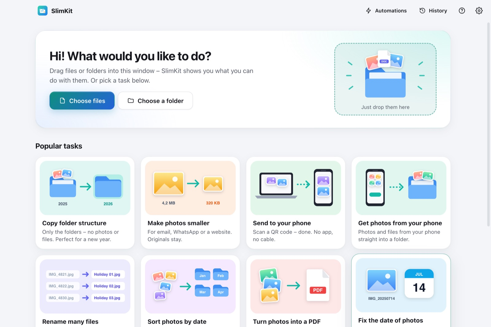
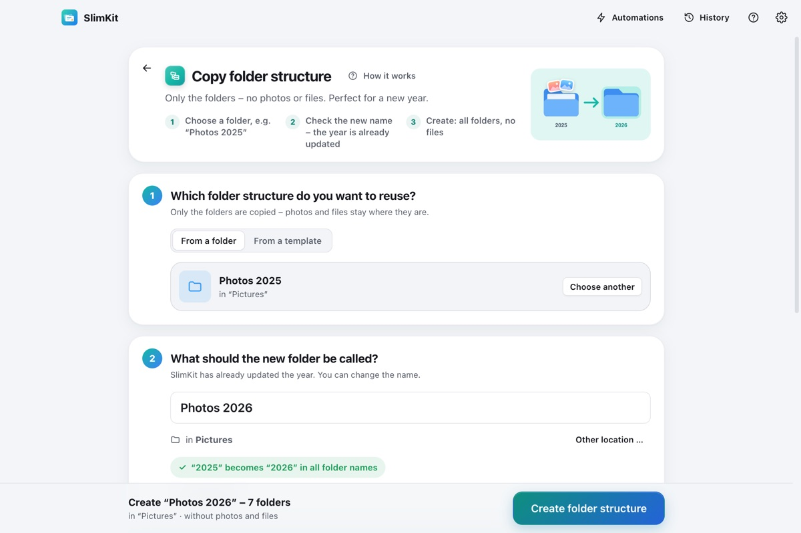

Die fehlenden Rechtsklick-Werkzeuge für Finder & Explorer.
Ordnerstruktur ohne Dateien kopieren (2025 → 2026), Fotos kleiner machen, viele Dateien umbenennen, Dateien per QR-Code aufs Handy schicken – und alles rückgängig machen. Kostenlos für Windows und Mac.
KostenlosOhne WerbungOhne KontoAlles bleibt auf deinem Computer

Was SlimKit für dich erledigt
Dateien markieren, Rechtsklick, SlimKit – das passende Werkzeug öffnet sich mit deiner Auswahl. Vorher siehst du immer eine Vorschau.
▦Ordnerstruktur kopierenNur die Ordner, ohne Fotos und Dateien. „Fotos 2025“ wird zu „Fotos 2026“ – auch jedes Jahr automatisch.
▣Fotos kleiner machenFür E-Mail, WhatsApp, Webseite oder Formulare (höchstens 1 MB). Die Originale bleiben.
↗Aufs Handy schickenQR-Code scannen, laden – ohne App, ohne Kabel, ohne Cloud.
↙Fotos vom Handy holenAm Handy Fotos auswählen – sie landen direkt im gewählten Ordner.
✎Viele Dateien umbenennen„IMG_4821.jpg“ wird „Urlaub 01.jpg“ – mit Vorschau für jede Datei.
◫Fotos nach Datum ordnenAutomatisch in Ordner nach Monat oder Jahr – nach dem echten Aufnahmedatum.
▤Aus Fotos eine PDF machenAbfotografierte Arbeitsblätter oder Belege als ordentliche A4-PDF.
◷Datum von Fotos reparierenFalsches Datum nach dem Kopieren? SlimKit holt das Aufnahmedatum zurück.

Ordnerstruktur kopieren – endlich einfach
Nur Ordner, keine Dateien: Deine Fotos und Dokumente bleiben, wo sie sind.
Jahreszahl automatisch: „2025“ wird in allen Ordnernamen zu „2026“, auch „Schuljahr 2025-2026“.
Fertige Vorlagen: Schuljahr, Fotos nach Monaten, Unterlagen, Projekt …
Jedes Jahr von selbst: Am 1. Januar ist die neue Ordnung schon da.
So installierst du SlimKit
1
Herunterladen
Klicke oben auf „Herunterladen“. Die Datei SlimKit-Setup.exe landet in deinem Download-Ordner.
2
Doppelklicken
Die Installation läuft von selbst. Danach führt dich SlimKit kurz durch die Einstellungen.
3
Rechtsklick-Menü einrichten
Ein Klick in der Einführung. Danach: Rechtsklick → „Weitere Optionen anzeigen“ → SlimKit.
Falls ein blaues Fenster „Der Computer wurde durch Windows geschützt“ erscheint:
Klicke auf den Text „Weitere Informationen“.
Klicke auf „Trotzdem ausführen“.
Das passiert bei neuen Programmen, die Windows noch nicht kennt. Beim ersten Senden aufs Handy fragt die Firewall – dann „Zugriff zulassen“ wählen. Kein Admin-Recht? Nimm die portable ZIP.
1
Herunterladen & öffnen
Klicke oben auf „Herunterladen“ und öffne SlimKit-Mac.dmg aus deinem Download-Ordner.
2
In „Programme“ ziehen
Ziehe das SlimKit-Symbol auf den Ordner „Programme“. Dann aus „Programme“ starten.
3
Rechtsklick-Menü einrichten
Ein Klick in der Einführung. Danach: Rechtsklick im Finder → „Schnellaktionen“ → SlimKit.
Beim ersten Öffnen meldet macOS „kann nicht geöffnet werden“?
Klicke auf „Fertig“ (nicht „In den Papierkorb“).
Öffne Systemeinstellungen → Datenschutz & Sicherheit und scrolle ganz nach unten.
Klicke bei „SlimKit wurde blockiert“ auf „Dennoch öffnen“ und bestätige mit deinem Passwort.
Das ist nur einmal nötig. Fragt der Mac beim Senden aufs Handy nach dem lokalen Netzwerk, wähle „Erlauben“.
Für jeden einfachSchritt für Schritt mit Bildern und Vorschau. Einfach- und Expertenmodus.
Alles rückgängigJede Änderung steht im Verlauf und lässt sich mit einem Klick zurücknehmen.
AutomatikJedes Jahr neue Ordner, Downloads aufräumen, alte Dateien entfernen – von selbst.
SchlankBraucht nur Speicher, wenn du es benutzt. Im Hintergrund nur, wenn du Automatik willst.
PrivatKein Konto, keine Cloud, keine Datensammlung. Die Übertragung bleibt in deinem WLAN.
Mehr für ProfisDoppelte Dateien finden, Ordnergröße, Ordner auflösen, leere Ordner, Dateiliste.
Häufige Fragen
Wie kopiere ich eine Ordnerstruktur ohne Dateien?
Installiere SlimKit kostenlos (Windows oder Mac). Rechtsklick auf den Ordner → SlimKit → „Ordnerstruktur kopieren“. SlimKit kopiert nur die Ordner, nie die Fotos oder Dokumente, und ersetzt die Jahreszahl in allen Ordnernamen automatisch (z. B. „Fotos 2025“ → „Fotos 2026“).
Kann SlimKit die Ordner fürs neue Jahr automatisch anlegen?
Ja. Unter „Automatik“ → „Jedes Jahr neue Ordner“. Am 1. Januar sucht SlimKit deinen neuesten Jahres-Ordner und legt dieselbe Ordnung fürs neue Jahr an – ohne Dateien. War der Computer aus, holt SlimKit es beim nächsten Start nach.
Wie schicke ich Dateien vom Computer aufs Handy – ohne App und Kabel?
Rechtsklick auf die Dateien → SlimKit → „Aufs Handy schicken“. QR-Code mit der Handy-Kamera scannen, es öffnet sich eine Webseite zum Laden (einzeln oder als ZIP). Klappt mit jedem iPhone und Android im eigenen WLAN – ohne App, ohne Cloud, ohne Internet.
Wie mache ich Fotos kleiner für E-Mail oder ein Formular?
„Fotos kleiner machen“ wählen, sagen wofür (E-Mail, WhatsApp, Webseite oder Formular mit höchstens 1 MB). SlimKit legt kleine Kopien in einen neuen Ordner. Die Originale bleiben unverändert, Standortdaten werden entfernt.
Wo finde ich SlimKit im Rechtsklick-Menü?
Mac: Rechtsklick → „Schnellaktionen“ → SlimKit. Windows: Rechtsklick → SlimKit (Windows 11: zuerst „Weitere Optionen anzeigen“) oder „Senden an“ → SlimKit. Eingerichtet wird es mit einem Klick in der App, ohne Admin-Rechte.
Kann ich Änderungen rückgängig machen?
Ja. Du siehst vorher immer eine Vorschau. Umbenennen, Sortieren, Datum ändern und angelegte Ordner lassen sich im Verlauf mit einem Klick rückgängig machen.
Verbraucht SlimKit viel Speicher oder Akku?
Nein. SlimKit läuft nur, wenn du es benutzt, und beendet sich beim Schließen. Nur wenn du eine Automatik einschaltest, bleibt es als kleines Symbol im Hintergrund – und prüft dann einmal pro Minute, ob etwas zu tun ist.
Ist SlimKit kostenlos?
Ja. Komplett kostenlos – ohne Werbung, ohne Konto, ohne Grenzen und ohne Datensammlung.